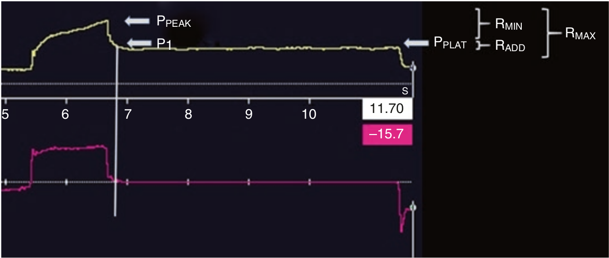

هنگام اجرای مانور انسداد پایان دمی برای اندازه گیری فشار پلاتو، فشار راه هوائی ابتدا یک افت سریع و زیاد میکند تا به فشار P1 برسد، سپس فشار با سرعت کم شروع به افت می کند و ظرف 3 - 5 ثانیه بسته به شرایط ریه بیمار به فشار پلاتو میرسد. مقاومت ماگزیمم در اینجا عبارت است از:
RMAX = (PPEAK - PPLAT) / Flow
این مقاومت ماگزیمم از دو قسمت مقاومت مینیمم و مقاومت اضافی تشکیل شده است.
RMIN = (PPEAK - P1) / Flow
REXT = (P1 - PPLAT) / Flow
مقاومت مینیمم در واقع همان مقاومت راه هوائی و لوله تراشه است. مقاومت اضافی مربوط به به رفتار ویسکوالاستیک و یا شلی استرسی بافت ریه و همچنین اضمحلال شدت جریان فیمابین واحدهای ریوی دارای ثابت زمانی مختلف می باشد. تفاوت ثابت های زمانی واحدهای مختلف ریوی سبب حرکت پاندولی گاز از واحدهای دارای ثابت زمانی کوتاه به واحدهای دارای ثابت زمانی بلند میشود.

هنگام اجرای مانور انسداد پایان دمی، فشار راه هوائی:
۱ - بسرعت به فشار پلاتو افت میکند
۲ - تا وقتی که درجه های ونتیلاتور بسته شوند باثبات باقی می ماند
۳ - ابتدا تا حد فلوی مقاومت راه هوائی و لوله تراشه افت میکند
۴ - پس از بسته شدن دریچه های ونتیلاتور فشار بتدریج به یک پلاتور میرسد
۵ - سه و چهار